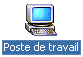
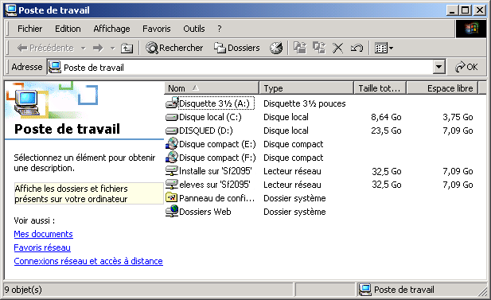
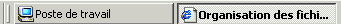
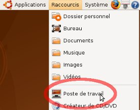
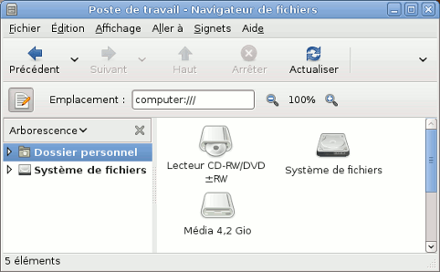
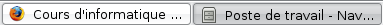

Explorer l'ensemble des fichiers sur
ton ordinateur
Les systèmes
d'exploitation disposent
d'une série d'outils qui permettent d'explorer l'ensemble des fichiers
disponibles sur l'ordinateur.
Tu utilises Windows
(clique
ici)
Windows 2000 et XP sont munis d'un outil
qui permet
d'explorer la structure des différents dossiers présents
sur les disques de l'ordinateur, voire même des disques
présents sur d'autres ordinateurs. Il s'agit de l'outil que l'on
pourrait appeler un explorateur du Poste de travail.
Cet outil est généralement disponible sur le bureau.
- Réduis toutes les
fenêtres actuellement
actives en
cliquant sur la case de réduction de leur barre de Organisation
des fichiers sur
les disques
ou clique sur le bouton de la barre des tâches, à
droite du bouton . - Clique
sur
l'icone du poste de travail présente
sur le bureau.
Une fenêtre présentant
l'ensemble des
éléments importants du Poste de travail
apparaît. La fenêtre peut être un peu
différente sur l'ordinateur que tu utilises.

Dans la
barre
des tâches, l'icône correspondante
apparaît.

Pour passer du Poste
de travail
à cette leçon, clique sur le bouton correspondant. Dans
la suite de la leçon, tu devras travailler simultanément
avec le document actuel dans le navigateur web et l'explorateur du
Poste de travail.
Tu
utilises Linux (clique ici)
Les systèmes Linux sont munis
d'un outil qui permet
d'explorer la structure des différents dossiers présents
sur les disques de l'ordinateur, voire même des disques
présents sur d'autres ordinateurs. Il s'agit de l'outil que l'on
pourrait appeler un explorateur du Poste de travail.
Sous
Ubuntu (Gnome), l'outil est disponible depuis le menu Raccourcis,
généralement disponible en haut et à gauche de l'écran.
- Dans le menu Raccourcis,
sélectionne l'option Poste de Travail.
Une fenêtre Navigateur
de fichiers présentant l'ensemble des
éléments importants du Poste de travail
apparaît. La
fenêtre peut être un peu
différente selon la configuration de l'ordinateur que tu utilises.

Dans
la barre
des tâches, l'icône correspondante
apparaît.

Pour
passer
du Navigateur de fichiers
à cette leçon, clique sur le bouton correspondant. Dans
la suite de la leçon, tu devras travailler simultanément
avec le document actuel dans le navigateur web et le Navigateur
de fichiers.
Quand
le Navigateur de fichiers est ouvert,
passe à
la page suivante.